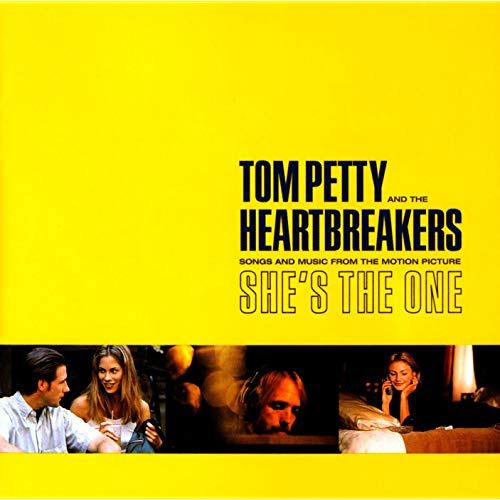
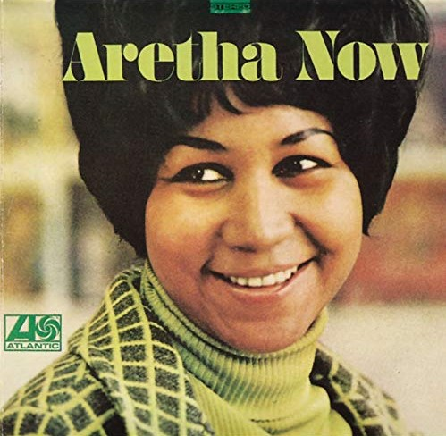
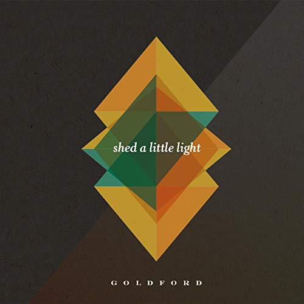
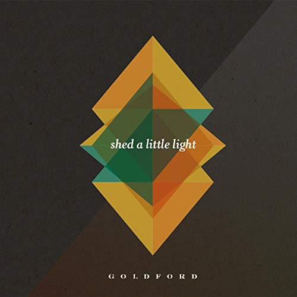

hi i'm joe and i like these
By Joseph Mampillil

Angel Dream (No. 4),
Tom Petty and the Heartbreakers,
She's the One

I Say a Little Prayer, Aretha Franklin,
Aretha Now
If I Ain't Got You, Alicia Keys,
The Diary of Alicia Keys
 Roll it on Home, John Mayer,
The Search for Everything

Upside Down, GoldFord,
Shed a Little Light
Roll it on Home, John Mayer,
The Search for Everything

Upside Down, GoldFord,
Shed a Little Light
 Whatta Man, Salt n' Pepa,
Very Necessary
Whatta Man, Salt n' Pepa,
Very Necessary